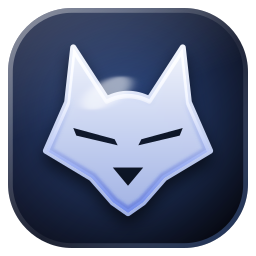
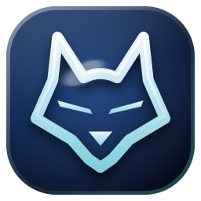

For the PC that hosts
Fenrir
Your games and their mods, game servers, Minecraft worlds, your own sites and apps, friends and game nights, in one window.
Meet FenrirFor whoever hosts game night
Fenrir turns one Windows PC into a home for your games and your friends. It mods every game you own and puts every file back, hosts game servers and your own sites and apps, and sends each friend a link of their own.
Games · every game you own
Your games
Everything you host
Three apps
Fenrir runs on the PC that hosts. Friends get Fenrir Connect from the link you send them, and Fenrir Link puts it all on your phone.

Your games and their mods, game servers, Minecraft worlds, your own sites and apps, friends and game nights, in one window.
Meet Fenrir
Opens your link, gets their copy of the game ready with the same mods, and joins your server with one button.
Meet Fenrir Connect
Start and stop your servers, start game night and see who is on, from anywhere. Android, and any iPhone from Safari.
Meet Fenrir LinkEvery game you own
Fenrir finds your games on Steam, Epic, GOG, Ubisoft, EA and Xbox, and the ones you own but have not downloaded yet. Mods go in with one click and come out whole.
Mods 9 from Thunderstore
Remove all from the game
Game servers
Valheim, Palworld, 7 Days to Die, Terraria, GTA V through FiveM, Skyrim Together, and Minecraft worlds with any modpack. Answer a few questions, and one press downloads a server, sets it up and starts it.
Server · Valheim
Server running
up 2 h 14 min · 3 of 10 playing · the same 12 mods as your gameFriends anywhere can join, with join code 482193
Servers · switch or add
Sites and apps
Serve a folder as a website, run an app or project with its own command, or share a port a program already uses. Each one gets a free public address, your own domain, or stays on your home network.
Hosting · anything on this PC
Sites & apps
Game night page · its addresses
Friends
Type a name and Fenrir makes that friend a link of their own. It greets them and has Fenrir Setup with their key inside. Fenrir Connect gets their copy of the game ready with the same mods, and Join puts them in your game.
Hi Alex, come and play Valheim
Your key is inside the Setup. Windows 10 or 11, with your own copy of Valheim.
Fenrir Connect · Games
Game nights
Pick a server, a day and a time, once or every week. Friends answer I’m in from their apps or phones, Fenrir starts the server ten minutes before, and stops it once it has been empty for half an hour.
Game night · every Friday
Friday game night 21:00 on the Valheim server
Ask Fenrir
Press Ctrl+K and type it the way you would say it: start Palworld, who is on, game night Friday at 8, why did Lethal Company crash. Fenrir lists each change, and nothing happens until you press Do it. Try it in the picture.
Ask Fenrir · Ctrl+K, then type
Claude Code · asks first
Mashups
Pick the game you play in and up to three more, then what each one brings: its world, weapons, vehicles, building or music. Fenrir sets up the project, and the AI you choose builds it with you, asking before it builds, installs or plays.
Mashups · what each game brings
The builder · your AI
Fenrir Link
Scan a code from Fenrir once and your phone keeps it like a passkey. Start and stop game servers, sites and apps, start tonight's game night, and answer the mashup builder from anywhere. Friends scan their own code in Fenrir Connect.
Tonight
Game night at 21:00Valheim · 3 are inStart nowGame servers
Sites & apps
Friends
How it works
Steam, Epic, GOG, Ubisoft, EA and Xbox, and the games you own but have not downloaded yet. Mod any of them in one click.
Host a game's server asks for its name and password, then downloads it, sets it up and starts it. Or start a Minecraft world from a Modrinth or CurseForge pack.
They open it and run Fenrir Setup. Fenrir Connect gets their copy ready with the same mods, and Join puts them in your game.
Safe to run
No account, no ads, no analytics. What leaves your PC is what you switch on, and every change Fenrir makes comes with its way back.
Fenrir, Fenrir Connect and Fenrir Link cost nothing, and there is nothing to sign up for.
What leaves your PC: update checks, the mod sites you install from, the tunnels you switch on and the AI you choose.
Every update is checked against a signature only Fenrir’s publisher can make. If a new build does not start, the one you had comes back.
Removing mods puts each game’s own files back, and Settings lists everything Fenrir changed on this PC, each with its way back.
Every archive is read back before an old one goes, and a restore is rehearsed each month.
It installs for your Windows account only. Windows asks only when you choose, such as letting friends through the firewall.
Fenrir is free for Windows 10 and 11. Your friends need only the link you send them.
Fenrir Setup for Windows 10 and 11